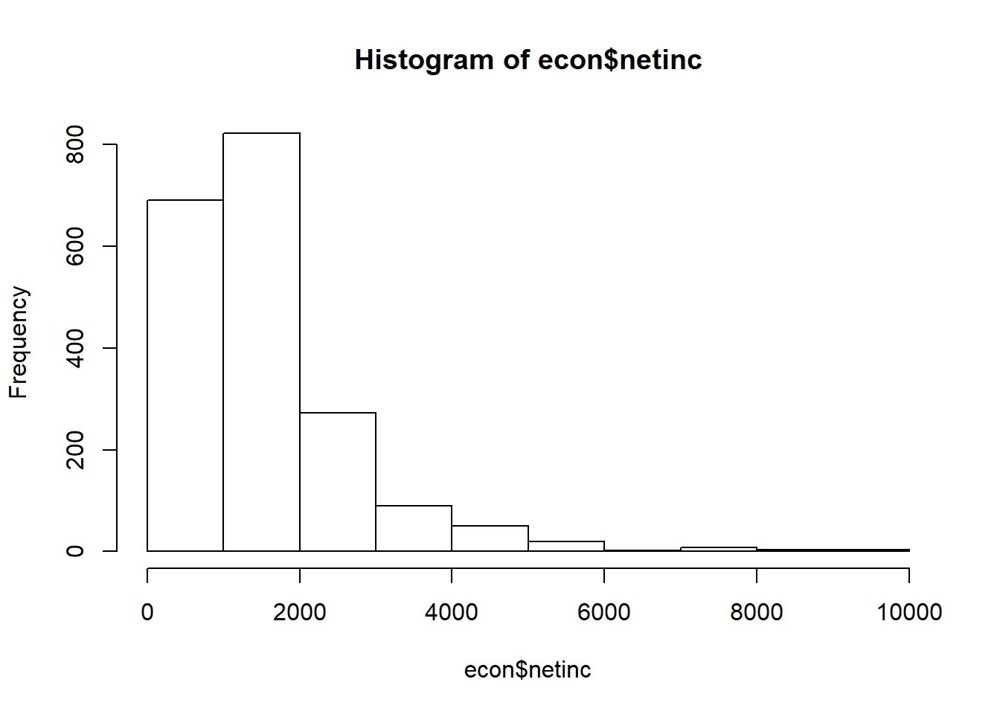

# Laden des Datensatzes
library(readstata13)
library(tidyverse)## -- Attaching packages ------------------------------------------------------------------ tidyverse 1.2.1 --## v ggplot2 2.2.1 v purrr 0.2.4
## v tibble 1.4.2 v dplyr 0.7.4
## v tidyr 0.8.0 v stringr 1.2.0
## v readr 1.1.1 v forcats 0.3.0## -- Conflicts --------------------------------------------------------------------- tidyverse_conflicts() --
## x dplyr::filter() masks stats::filter()
## x dplyr::lag() masks stats::lag()library(magrittr)##
## Attaching package: 'magrittr'## The following object is masked from 'package:purrr':
##
## set_names## The following object is masked from 'package:tidyr':
##
## extract#Daten als Objekt importieren
econ <- read.dta13(file="data/offline/econometrics.dta" ,
convert.factors=F,
nonint.factors = F)
# Subsample with 5000 Observations
econ <- econ [sample(c(1:nrow(econ)),size = 5000,replace = FALSE),]!! Marcel here: not sure if we should stick with car::recode. I personally don’t like it and prefer classic R with [], but its so much more code-intensive…
library(car)##
## Attaching package: 'car'## The following object is masked from 'package:dplyr':
##
## recode## The following object is masked from 'package:purrr':
##
## some# Variable Alter generieren
econ$alter = 2003 - econ$gebjahr
econ$alter [econ$alter == 2004] <- NA # entfernen der fehlerhaften
#sex
econ$sex <- factor(econ$sex,levels = c(1,2),labels = c("männlich","weiblich"))
# Ueberstunden recodieren 0=nein, 1=ja
econ$over = recode(econ$tp72,"2=0;-2=NA;-1=NA; 3=NA")
# Vertragliche und tatsaechliche Wochenarbeitszeit
# Missings bereinigen
econ$contract = recode(econ$tp7001,"-3=NA;-2=NA;-1=NA")
econ$actual = recode(econ$tp7003,"-3=NA;-2=NA;-1=NA")
econ$contract = econ$contract/10
econ$actual = econ$actual/10
# Vertrauen
# "Trust in people" und "Can't rely on anybody" recodieren
econ$trust = recode(econ$tp0301,"-1=NA")
econ$rely = recode(econ$tp0302,"-1=NA")
econ$netinc = recode(econ$tp7602,"-3=NA;-2=NA;-1=NA")
# Nur relevante Variablen werden übernommen
econ_data <- econ[,c("netinc","alter","sex","contract","actual","trust","rely")]
head(econ_data)## netinc alter sex contract actual trust rely
## 8688 270 52 weiblich NA NA 2 2
## 5247 NA 78 männlich NA NA 3 1
## 5843 1800 55 männlich 38.5 55 2 3
## 9694 NA 67 männlich NA NA 2 3
## 5498 NA 26 männlich NA NA 3 1
## 12375 NA 32 weiblich NA NA 3 2# Delete NAs
econ_data <- na.omit(econ_data)
# Einkommen Kategorisiert in Quartile
hist(econ$netinc)
quantile(econ_data$netinc)## 0% 25% 50% 75% 100%
## 0 870 1383 1880 7500econ_data$inc_kat <- NA
econ_data$inc_kat [econ_data$netinc < quantile(econ_data$netinc)[2]] <- "Q1"
econ_data$inc_kat [econ_data$netinc >= quantile(econ_data$netinc)[2] & econ_data$netinc < quantile(econ_data$netinc)[3]] <- "Q2"
econ_data$inc_kat [econ_data$netinc >= quantile(econ_data$netinc)[3] & econ_data$netinc < quantile(econ_data$netinc)[4]] <- "Q3"
econ_data$inc_kat [econ_data$netinc >= quantile(econ_data$netinc)[4] ] <- "Q4"
table(econ_data$inc_kat)##
## Q1 Q2 Q3 Q4
## 421 422 420 423Some of the most important functions when it gets to datamanagement stem from the tidyverse-packages and most notably dplyr. We can only provide you with a small overview here, but if you understand mutate, summarise and group_by, you should be good to go.
We can easily add variables (or transformed versions of others) to a knew dataset by adding a new variable through mutate.
For example, assume we wanted to add a squared age term:
econ_data <-
econ_data %>% mutate(alter_squared = alter^2)
head(econ_data)## netinc alter sex contract actual trust rely inc_kat alter_squared
## 1 1800 55 männlich 38.5 55 2 3 Q3 3025
## 2 325 33 weiblich 8.0 8 2 3 Q1 1089
## 3 880 33 weiblich 40.0 43 2 2 Q2 1089
## 4 1230 32 weiblich 27.0 27 2 3 Q2 1024
## 5 100 41 weiblich 6.0 6 2 3 Q1 1681
## 6 760 41 weiblich 19.3 23 3 3 Q1 1681Summarise allows us to summarise certain variables, such as certain features of netincome.
econ_data %>%
summarise(mean = mean(alter,na.rm = T),
sd = sd(alter,na.rm = T))## mean sd
## 1 40.70047 11.51945The same is also possibled for grouped structures. Say, for example, you would want to calculate seperate values for different genders:
econ_data %>%
group_by() %>%
summarise(mean = mean(alter,na.rm = T),
sd = sd(alter,na.rm = T))## # A tibble: 1 x 2
## mean sd
## <dbl> <dbl>
## 1 40.7 11.5